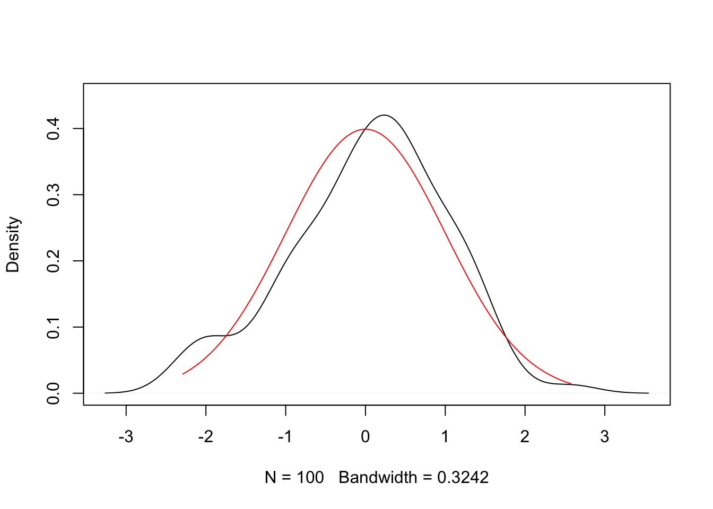
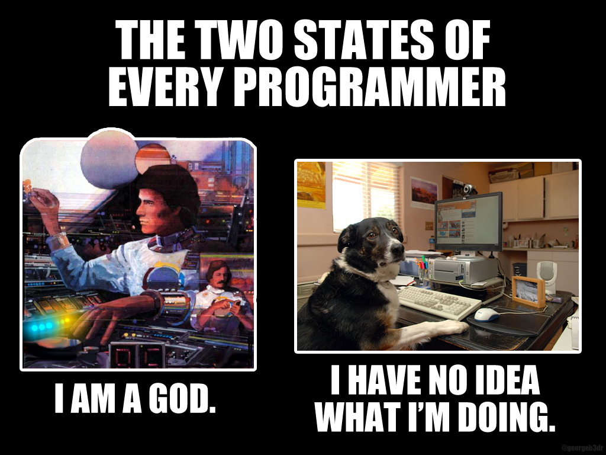

Script Introduction to Data Analysis
2019-10-28
Chapter 1 Course Overview
This course is an introduction to data analysis using the programming language R and the editor R-Studio.
Objective of the course
Review basic methods and models from econometrics and implement them in R.
Goal: Being able to evaluate different methods based on their finite sample properties
1.1 List of Topics
- Multiple linear regression
- Nonparametric Density Estimation
- Nonparametric Regression
- Maximum Likelihood
- Quantifying Uncertainty: Bootstrap
1.2 Methods
1.2.1 Data
We will use (in most cases) simulated data:
- allows us to control the data generating process (normality, homoskedasticity, linearity, etc.).
- manipulate properties of the DGP to evaluate different estimators
1.2.2 Tools
To follow along you need to download the newest version of R and the editor RStudio
- https://cran.r-project.org
- https://rstudio.com/products/rstudio/
- Script: Theory and embedded Rcode, newest version always available on E-Campus.
An Example: Density estimation
Suppose that \(X \sim \mathcal{N}(0,1)\). Compare a randomly chosen sample from a normal distribution with the theoretical values of the normal distribution.
N=100# Number of observations in the draw
x<-rnorm(N, mean=0, sd=1)
z=seq(min(x),max(x),le=100)
hx<-dnorm(z)
plot(density(x),main="",ylim=c(0,0.45))
lines(z,hx, col="red")
1.3 Exam
There will be an exam that will last 60 Minutes. The exam will contain theoretical questions about the models we discussed, empirical questions and some chunks of code to be discussed.
1.4 Timetable
- 11.10, 16.10, 18.10: Introduction to R. Lecture on 11.10. and 16.10.: for complete beginners. If you already have knowledge of R, you do not need to come.
- Every Wednesday: Theory and Model.
- Every Friday: Exercise and Programming.
- No lecture: 22.11.
